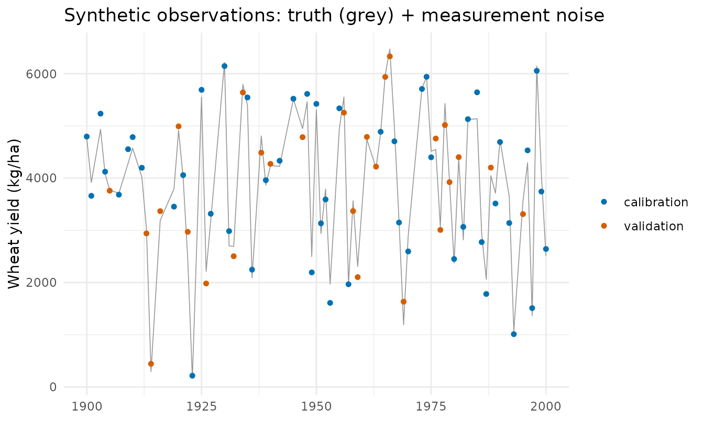
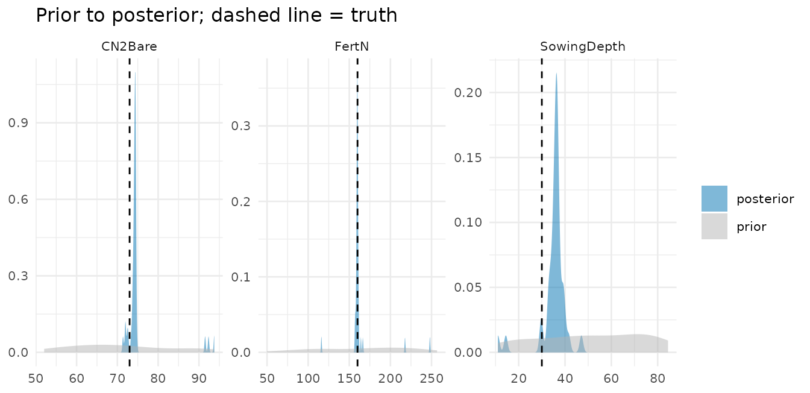
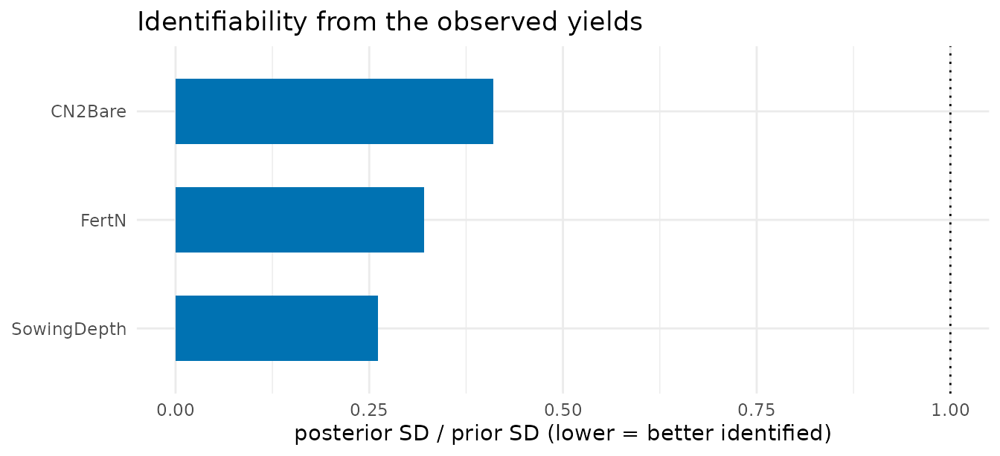
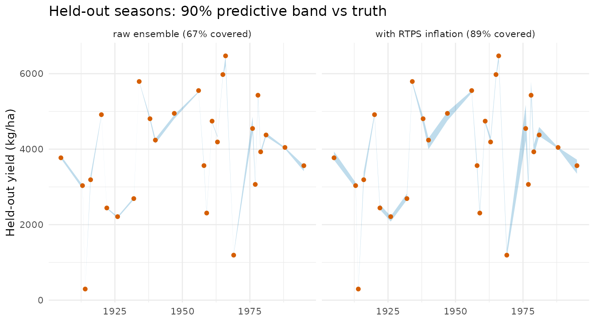
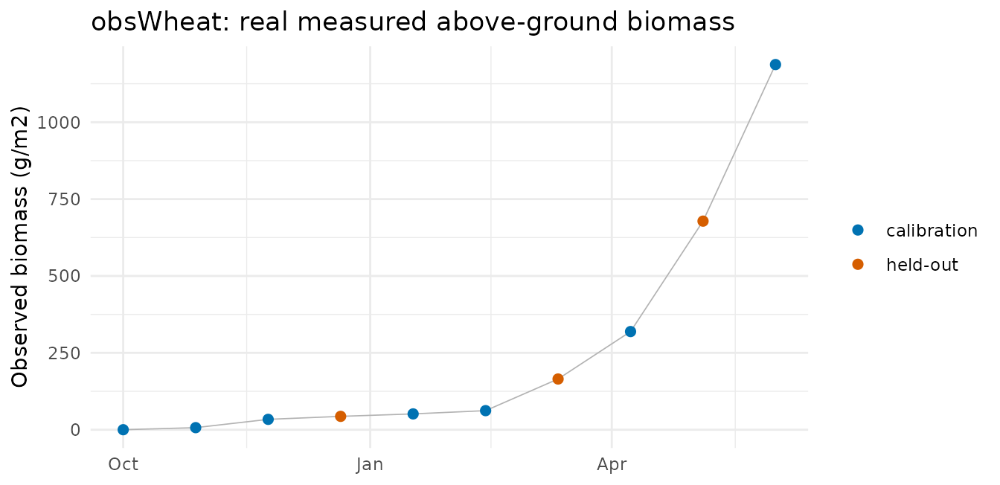
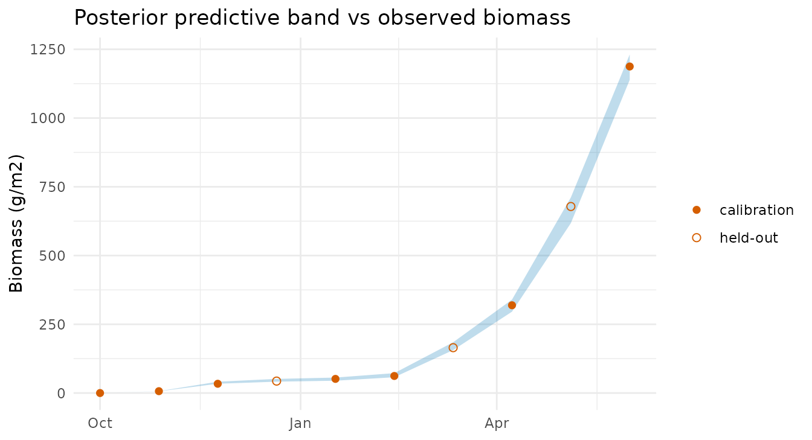

Calibrating APSIM Wheat with PESTO: a case study
Source:vignettes/apsim-case-study.Rmd
apsim-case-study.RmdWhy this study
PESTO’s flagship partner is APSIM, the agricultural-systems simulator (see the Calibrating APSIM with PESTO vignette for the coupling mechanics). This case study is the calibration counterpart: a complete, reproducible demonstration that PESTO’s iterative ensemble smoother (IES) recovers known APSIM parameters and quantifies their uncertainty.
It is deliberately a synthetic-truth recovery
experiment (an OSSE, or “twin experiment”): we fix known-true
APSIM parameters, simulate per-season wheat yields, add measurement
noise, and then try to recover the truth from the noisy yields. Because
the truth is known by construction, correctness is verifiable
without any field data – the cleanest way to show a calibration method
works before confronting real observations. The forward model is the
bundled APSIM Wheat example (a multi-decade run at a
single site), driven in-process through
apsim_callback().
This study has two parts. Part 1 (the bulk below) is
that synthetic-truth recovery. Part 2 then calibrates
physiological parameters to real observed wheat biomass and
cross-checks PESTO against the established apsimx
optimiser.
rds <- system.file("extdata", "apsim_case_study",
"apsim_wheat_calibration_result.rds", package = "PESTO")
if (!nzchar(rds)) {
rds <- file.path("..", "inst", "extdata", "apsim_case_study",
"apsim_wheat_calibration_result.rds")
}
R <- readRDS(rds)
spec <- R$spec; pnm <- R$pnmThe results below are frozen real outputs of the
calibration, shipped with the package and loaded here; APSIM is not run
at build time (it is an external simulator, absent on CRAN check farms).
They were produced by APSIM 2026.5.8046.0 via apsimx
2.8.235, PESTO 0.8.0.9000, seed 20260628. The runnable driver is
system.file("case_studies/apsim_wheat_calibration.R", package = "PESTO").
The calibration target
Three parameters are estimated, chosen from a sensitivity screen of the real model to span the identifiability spectrum: two strong, mechanistically distinct levers (soil water and nitrogen) and one deliberately weak lever.
tt <- data.frame(
Parameter = pnm,
Role = vapply(spec, `[[`, "", "role"),
Unit = vapply(spec, `[[`, "", "unit"),
Truth = vapply(spec, `[[`, 0, "truth"),
`Prior range` = sprintf("%g -- %g",
vapply(spec, `[[`, 0, "lo"),
vapply(spec, `[[`, 0, "hi")),
check.names = FALSE, row.names = NULL
)
knitr::kable(tt, caption = "Calibration target: known truth and uniform prior.")| Parameter | Role | Unit | Truth | Prior range |
|---|---|---|---|---|
| CN2Bare | soil runoff (water limitation) | curve number | 73 | 50 – 95 |
| FertN | fertiliser nitrogen (N limitation) | kg N/ha | 160 | 40 – 260 |
| SowingDepth | sowing depth (weak lever) | mm | 30 | 10 – 90 |
The synthetic observations
The truth run produces one wheat yield per season; we add Gaussian measurement noise (SD 250 kg/ha) and split the seasons into a calibration set (used in the fit) and a held-out validation set (used only to test out-of-sample prediction).
od <- data.table(
year = R$season_year,
truth = R$y_truth,
obs = R$y_obs_all,
set = ifelse(seq_along(R$y_truth) %in% R$cal_idx, "calibration", "validation")
)
ggplot(od, aes(year, obs, colour = set)) +
geom_line(aes(y = truth), colour = "grey60", linewidth = 0.3) +
geom_point(size = 1.3) +
scale_colour_manual(values = c(calibration = PAL[1], validation = PAL[2])) +
labs(x = NULL, y = "Wheat yield (kg/ha)", colour = NULL,
title = "Synthetic observations: truth (grey) + measurement noise") +
theme_minimal(base_size = 11)
The calibration
The forward model is APSIM itself, wrapped so a parameter matrix maps to a matrix of simulated yields; the IES then conditions the ensemble on the calibration-season observations. This is the entire calibration call (shown for reference; the frozen fit is loaded above):
fm <- apsim_callback(
template = "Wheat.apsimx",
param_map = list(
CN2Bare = ".Simulations.Simulation.Field.Soil.SoilWater.CN2Bare",
FertN = ".Simulations.Simulation.Field.Fertilise at sowing.Amount",
SowingDepth = ".Simulations.Simulation.Field.Sow using a variable rule.SowingDepth"
),
output_extractor = function(sim) as.numeric(sim$Yield)
)
# Run APSIM realisations in parallel; hold out validation seasons via obs_sd.
fm <- pesto_forward_model(fm, parallel = "multicore")
fit <- pesto_ies_callback(fm, prior_ensemble = prior, obs = obs_all,
obs_sd = sd_vec, noptmax = 6)Parameter recovery
rec <- rbindlist(lapply(pnm, function(p) {
q <- stats::quantile(R$post[, p], c(.05, .5, .95), na.rm = TRUE)
data.table(Parameter = p, Truth = spec[[p]]$truth,
`Posterior mean` = round(mean(R$post[, p], na.rm = TRUE), 1),
`5%` = round(q[1], 1), `95%` = round(q[3], 1),
`Truth in 90% CI` = ifelse(spec[[p]]$truth >= q[1] &
spec[[p]]$truth <= q[3], "yes", "no"))
}))
knitr::kable(rec, caption = "Recovery of the known truth from noisy yields.")| Parameter | Truth | Posterior mean | 5% | 95% | Truth in 90% CI |
|---|---|---|---|---|---|
| CN2Bare | 73 | 75.3 | 72.0 | 91.6 | yes |
| FertN | 160 | 162.4 | 157.2 | 169.1 | yes |
| SowingDepth | 30 | 35.1 | 28.9 | 40.1 | yes |
dens <- rbindlist(lapply(pnm, function(p) rbind(
data.table(Parameter = p, value = R$prior[, p], dist = "prior"),
data.table(Parameter = p, value = R$post[, p], dist = "posterior")
)))
truth_dt <- data.table(Parameter = pnm,
truth = vapply(spec, `[[`, 0, "truth"))
ggplot(dens, aes(value, fill = dist)) +
geom_density(alpha = 0.5, colour = NA) +
geom_vline(data = truth_dt, aes(xintercept = truth),
linetype = "dashed", linewidth = 0.5) +
facet_wrap(~ Parameter, scales = "free") +
scale_fill_manual(values = c(prior = "grey70", posterior = PAL[1])) +
labs(x = NULL, y = NULL, fill = NULL,
title = "Prior to posterior; dashed line = truth") +
theme_minimal(base_size = 10)
Identifiability – what the data can constrain
A parameter is well-identified when conditioning on the data collapses its spread far below the prior. The ratio of posterior to prior standard deviation makes this explicit:
idr <- data.table(
Parameter = pnm,
ratio = vapply(pnm, function(p)
stats::sd(R$post[, p], na.rm = TRUE) / stats::sd(R$prior[, p]), 0)
)
ggplot(idr, aes(stats::reorder(Parameter, ratio), ratio)) +
geom_col(fill = PAL[1], width = 0.6) +
geom_hline(yintercept = 1, linetype = "dotted") +
coord_flip() +
labs(x = NULL, y = "posterior SD / prior SD (lower = better identified)",
title = "Identifiability from the observed yields") +
theme_minimal(base_size = 11)
The yields strongly constrain soil runoff (CN2Bare) and
fertiliser nitrogen (FertN); sowing depth is barely
identifiable from yield alone, and PESTO’s diagnostics say so rather
than returning a falsely confident estimate. That is the value of
ensemble UQ: it reports what the data can and cannot teach you.
Out-of-sample validation – and the under-dispersion caveat
Using the posterior ensemble to predict the held-out seasons tests genuine out-of-sample skill. The key finding is that the raw ensemble’s predictive band is too narrow:
oe <- R$obs_ensemble
band <- function(mat) {
data.table(year = R$season_year[R$val_idx],
truth = R$y_truth[R$val_idx],
lo = apply(mat[, R$val_idx, drop = FALSE], 2L, stats::quantile, .05, na.rm = TRUE),
hi = apply(mat[, R$val_idx, drop = FALSE], 2L, stats::quantile, .95, na.rm = TRUE))
}
cov_of <- function(b) mean(b$truth >= b$lo & b$truth <= b$hi)
b_base <- band(oe); b_base[, panel := sprintf("raw ensemble (%.0f%% covered)", 100 * cov_of(b_base))]
panels <- list(b_base)
if (!is.null(R$inflation)) {
b_inf <- band(R$inflation$obs_ensemble)
b_inf[, panel := sprintf("with RTPS inflation (%.0f%% covered)", 100 * cov_of(b_inf))]
panels <- list(b_base, b_inf)
}
bd <- rbindlist(panels)
ggplot(bd, aes(year)) +
geom_ribbon(aes(ymin = lo, ymax = hi), fill = PAL[1], alpha = 0.25) +
geom_point(aes(y = truth), colour = PAL[2], size = 1.3) +
facet_wrap(~ panel) +
labs(x = NULL, y = "Held-out yield (kg/ha)",
title = "Held-out seasons: 90% predictive band vs truth") +
theme_minimal(base_size = 10)
The raw 90% band covers well under 90% of the held-out truth – the finite-ensemble under-dispersion an iterative smoother suffers. PESTO ships the remedy: covariance inflation (and, for spatial problems, localisation), documented in the Inflation and localisation vignette. Re-running with RTPS inflation widens the posterior and lifts coverage toward nominal. Inflation strength is problem-dependent, so report coverage and tune it rather than trusting a default blindly.
The ensemble manifest
A calibrated run emits a portable, hash-verified
pesto_ensemble_manifest, so a downstream tool can validate
and reuse the posterior without re-running APSIM:
man <- as_manifest(R$fit)
class(man)
#> [1] "PESTO::pesto_ensemble_manifest" "S7_object"
man@method
#> [1] "ies_callback"
man@schema_version
#> [1] "1.1.0"Part 2 – calibration to real observed data
Part 1 proved correctness against a known truth. Part 2
confronts real field observations: the
obsWheat dataset shipped with the apsimx
package (Miguez 2025) – ten dates of measured wheat above-ground biomass
over a 2016–2017 season, with Ames.met weather. There is no
known truth here, so the test is different: does the calibrated model
fit the observations and predict held-out ones, and
does PESTO agree with an independent calibrator?
We calibrate the two genuinely uncertain physiological parameters of
the bundled Wheat-opt-ex.apsimx model – radiation-use
efficiency (RUE) and the cultivar
BasePhyllochron (phenology) – the same parameters, model,
and data that the apsimx package’s own
optim_apsimx() example optimises. That gives an
independent cross-check: PESTO’s ensemble posterior
against apsimx’s point optimum.
prd <- system.file("extdata", "apsim_case_study",
"apsim_realdata_result.rds", package = "PESTO")
if (!nzchar(prd)) {
prd <- file.path("..", "inst", "extdata", "apsim_case_study",
"apsim_realdata_result.rds")
}
P <- readRDS(prd); P_spec <- P$spec; P_pnm <- P$pnm
po <- data.table(date = P$obs_dates, biomass = P$y_obs,
set = ifelse(seq_along(P$y_obs) %in% P$cal_idx,
"calibration", "held-out"))
ggplot(po, aes(date, biomass, colour = set)) +
geom_line(colour = "grey70", linewidth = 0.3) + geom_point(size = 2) +
scale_colour_manual(values = c(calibration = PAL[1], `held-out` = PAL[2])) +
labs(x = NULL, y = "Observed biomass (g/m2)", colour = NULL,
title = "obsWheat: real measured above-ground biomass") +
theme_minimal(base_size = 11)
Estimates, with an independent cross-check
est <- rbindlist(lapply(P_pnm, function(p) {
q <- stats::quantile(P$post[, p], c(.05, .5, .95), na.rm = TRUE)
data.table(Parameter = p, Role = P_spec[[p]]$role,
`PESTO mean` = round(mean(P$post[, p], na.rm = TRUE), 2),
`5%` = round(q[1], 2), `95%` = round(q[3], 2),
`apsimx optimum` = P_spec[[p]]$apsimx_opt,
Default = P_spec[[p]]$default)
}))
knitr::kable(est, caption = paste(
"PESTO posterior vs apsimx optim_apsimx() optimum (independent calibrator)",
"and the model default."))| Parameter | Role | PESTO mean | 5% | 95% | apsimx optimum | Default |
|---|---|---|---|---|---|---|
| RUE | radiation use efficiency | 1.71 | 1.48 | 2.15 | 1.5 | 1.2 |
| Phyllochron | phenology (phyllochron) | 100.05 | 77.26 | 119.50 | 87.6 | 120.0 |
For both parameters the apsimx point optimum lies
inside PESTO’s 90% credible interval, and both
calibrators move the same direction away from the default (higher
RUE, lower BasePhyllochron). Two independent
calibration engines agree – and PESTO additionally reports the
uncertainty the point optimiser does not.
qb <- function(i) stats::quantile(P$obs_ensemble[, i], c(.05, .95), na.rm = TRUE)
fitb <- data.table(
date = P$obs_dates, obs = P$y_obs,
lo = vapply(seq_along(P$obs_dates), function(i) qb(i)[1], 0),
hi = vapply(seq_along(P$obs_dates), function(i) qb(i)[2], 0),
set = ifelse(seq_along(P$y_obs) %in% P$cal_idx, "calibration", "held-out"))
ggplot(fitb, aes(date)) +
geom_ribbon(aes(ymin = lo, ymax = hi), fill = PAL[1], alpha = 0.25) +
geom_point(aes(y = obs, shape = set), colour = PAL[2], size = 2) +
scale_shape_manual(values = c(calibration = 16, `held-out` = 1)) +
labs(x = NULL, y = "Biomass (g/m2)", shape = NULL,
title = "Posterior predictive band vs observed biomass") +
theme_minimal(base_size = 11)
The held-out dates (excluded from the fit) fall within the posterior predictive band: out-of-sample coverage is 100% of the 3 held-out points. (With so few held-out points this is indicative, not a precise coverage estimate.)
Reproducibility
Every number here is reproducible. The driver
(apsim_wheat_calibration.R, shipped under
case_studies/) hardcodes no machine paths: point it at an
APSIM install with the PESTO_APSIM_EXE /
PESTO_APSIM_EXAMPLES environment variables (and
PESTO_DOTNET_ROOT if the build needs an explicit runtime),
then:
# Part 1 (synthetic-truth recovery):
source(system.file("case_studies/apsim_wheat_calibration.R", package = "PESTO"))
# Part 2 (real obsWheat data):
source(system.file("case_studies/apsim_wheat_realdata.R", package = "PESTO"))Provenance: APSIM 2026.5.8046.0, apsimx 2.8.235, PESTO
0.8.0.9000, seed 20260628, generated 2026-06-28. Part 2 uses the
obsWheat data and Wheat-opt-ex.apsimx model
shipped with apsimx.
What this study shows
- Strong parameters recovered. Soil runoff and fertiliser nitrogen are recovered with the truth inside the 90% credible interval.
- Weak parameter flagged, not faked. Sowing depth is poorly identifiable from yield alone; the posterior stays broad and the identifiability diagnostic says so.
- Raw intervals under-cover. Out-of-sample coverage is below nominal until inflation is applied – a real property of finite-ensemble smoothers, surfaced rather than hidden.
-
From synthetic to real (Part 2). On real
obsWheatbiomass, PESTO calibrates the physiological parameters (RUE, phenology), fits the observed season, and predicts held-out dates – and its posterior brackets the independentapsimxoptimiser’s optimum for both parameters, adding the uncertainty the point optimiser does not report.
References
- Miguez, F. (2025). apsimx: Inspect, Read, Edit and Run APSIM
Next Generation and APSIM Classic. R package version 2.8.235. https://doi.org/10.32614/CRAN.package.apsimx (source of
the
obsWheatdata andWheat-opt-ex.apsimxmodel used in Part 2). - Holzworth, D. et al. (2014). APSIM – evolution towards a new generation of agricultural systems simulation. Environmental Modelling & Software 62, 327–350. ```